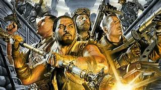

Welcome to the website about Call of Duty Zombies.
this is where you can go to take a look at the zombies coming out this year

Hello welcome this site will be foucusing on the aether storyline this is the oldest and longest storyline for Zombies ever.
The maker of callofduty Zombies is a company known as Treyarch. The storyline has flown through multiple games these games are Call of Duty: world at war Call of Duty: Black Ops, Call of Duty: Black Ops II, Call of Duty: Black Ops III and Call of Duty: Black Ops 4. There will be a new game to the story called Call of Duty Black Ops Cold War and is based on the aftermath of the storyline. So this will help you catch up and understand what has happened.
